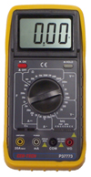
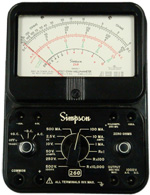

|
|
SPARKS Tutorial: Measuring Resistance |
1) How to use the DMM
The digital multimeter used in this module has limited functionality. Watch a movie on how to use the SPARKS DMM.
2) General Tutorial on Measuring Resistance
There are two types of meters used to measure resistance: analog meters (with a needle pointer) and digital meters (that display the values with a digital display). See example meters below.
|  |  | |
In this module you will only use a digital multimeter (DMM). However, it is important that you also understand the basics of measuring resistance with an analog meter.
With both meters, you must select a resistance scale to make a resistance measurement. If you select the wrong scale, you will not damage the meter, but it will probably take you longer to obtain the correct answer or your result may be only approximate.
On analog meters, the resistance scales are marked from 0 to infinity. The only thing that changes with the different scales is how easily you can discern between two resistors of similar values, or how many digits you can easily read from the marked scale.
Your instructor hopes to teach you proper operating procedures when using meters. Some will instruct you to always start with a meter on the highest scale. This is an efficient technique and protects the meter from harm- especially when using an analog meter. When measuring voltage or current on an analog meter, you can damage the meter mechanism if the needle "bangs" against the upper stop. So, the recommended practice is to start at the highest scale and drop down one setting at a time until you find the optimum setting.
|
With a DDMM, as long as the knob is set to read the correct type of measurement- current, voltage, or resistance- it doesn't matter what scale is selected: there is no risk of damage the meter. For example, with a meter that is rated with a maximum voltage of 1000V, you can connect any voltage from 0V up to 1000V with the meter set to any voltage scale. You may not get a reading when measuring a 100 VV source and the meter is set to a 2000 mV scale, but you won't hurt the meter. The "over scale indication" simply says you must turn the knob to a higher scale setting to get a reading. This same technique applies to current and resistance measurements. |
|
Some teachers want you to set the scale to what you expect to read. Why should you worry about setting the scale before making a measurement? They want you to think about the circuit and have an estimated value in mind before you measure. If you don't know what you should be reading, how do you know if your result is right or wrong? How will you know if the component or the circuit is good or bad? So, when using meters, make it your practice to estimate the result you expect and set the meter scale accordingly before making the measurement.
3) Three Important Reminders
1. Never try to measure resistance in a live circuit. If the resistor is in a circuit, disconnect one lead before measuring. In these modules, when making resistance measurements you will lose points if, at any time, you connect the DMM to a live circuit. 2. Always make sure your meter is set to the correct function before it is connected to the circuit. In these modules, when making resistance measurements, you will lose points if, at any time, you connect the DMM to the component and turn it On while not set to a resistance scale. 3. Choose the scale that gives you the most precise reading (the most significant digits). It is OK to adjust the scale after connecting the meter to the circuit to find the reading with the most digits.
By practicing these three techniques, you won't damage the DMM and you will always get the best reading. For this module, it doesn't matter when you turn the meter On. In addition, the color of the leads is irrelevant but you must use the proper jacks on the meter.
4) Best Practices
"Best practices" are what separate amateurs from the professionals. There are several ways to do things. For example, you can pound in a nail with a pipe wrench, but anyone watching you would not consider you a very good carpenter. Here are some tips that most technicians would consider "best practices" for measuring resistance:
1. Match the color of the leads with the DMM jacks: black for the COM (common) and red for V-ohm-mA (volt-ohm-milliampere). 2. Set the meter to the scale that best fits the value you expect before connecting it to the circuit. 3. Always turn the meter Off when finished with your measurements.